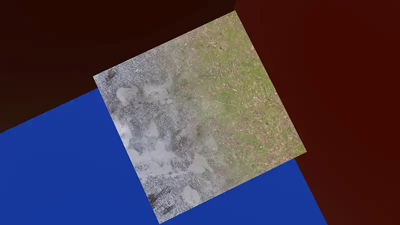

HLSL
| Project Status | Always Ongoing |
|---|---|
| Project Duration | Since August 2024 |
| Engine | Unity |
About
Visuals are one of the key components of games.
Without proper visual polish your game would look bland and boring.
Wanting to take my skills to another level i went and learnt HLSL.
I love the freedom it gives you as a developer and of cource its aplicable to stuff outside of unity
too!
Programming on the gpu is so different and interesting that it made me fall in love with programing
for the second time.
Here you can see some shaders that i have made. Ordered newest to oldest.
Custom PBR Shader
This shader uses albedo, roughness, normal and displacement textures in addition to the skybox to realisticly calculate lighting from every lightsource. It also has some fresnel to make it even more realistic. This shader was made to learn about these type of shaders so that i could get a basic idea of how to modify them.
Toon Shader
While working on my PBR shader i experimented a bit and quickly made a simple toon shader.
Texture Blending
This shader uses a gradient to blend between 2 textures. This can be used in biome blending for example.
Healthbar
This healthbar shader uses a texture to decide what color to be. everything else is pure math. It flashes when below a certain amount and has an adjustible outline. Because its made using an SDF it can be reshaped into a lot of different types of healthbar by changing very little.
Waves
This is a simple vertex displacement shader used to simulate waves. This too uses SDF's so it can easily be changed to something like a radial ripple for example.
Pickup Halo
This transparent shader can be used as an pickup halo around an item or repurpaced for something else quite easily.